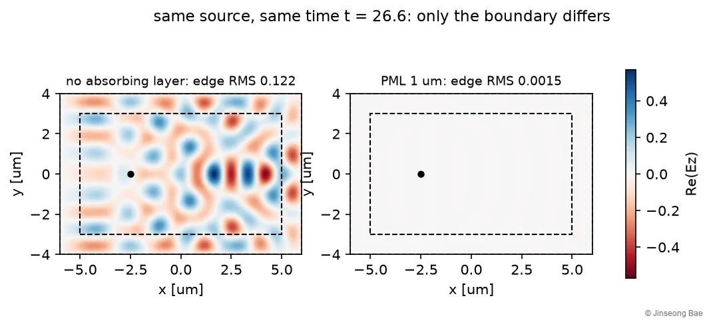
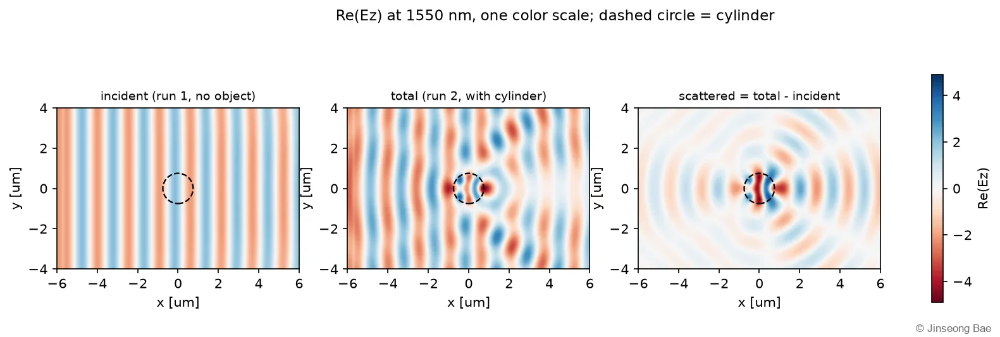
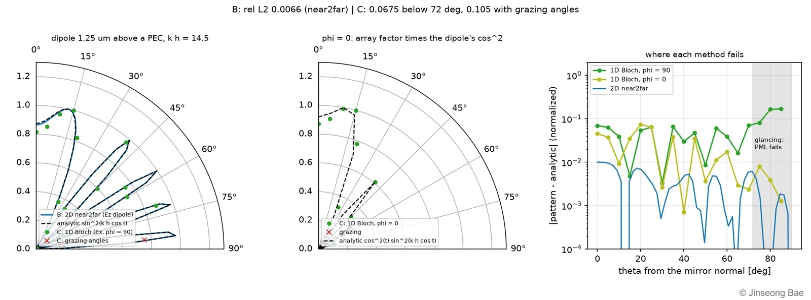
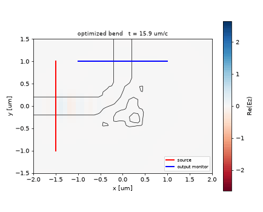

Why write it
The Meep documentation is strong at listing the API, but for someone new to FDTD it leaves out "why this source is placed here" and "how far this number can be trusted". The intended reader knows Python and basic optics but is new to FDTD.
The series keeps the official examples reproducible, predicts each result before running it, and does not hide wrong predictions. From post 10 on, it follows the order "confine light → extract it → send it".
Post rules
- Predict firstBefore computing, write a prediction table whose rows match the results comparison table.
- Look at the source firstCheck the source's time waveform and spectrum in a figure.
- Code in 7 stepsEach step gets three lines: "what / why / what happens if it is wrong".
- Convergence tableVary resolution and PML thickness at 2–3 points each to show how much the numbers move.
- Limits of the claimsWrite "what it shows" and "what it does not show", one line each.
- Clean-code rerunRerun the code published on the blog and recheck the values in the text.
Axes use physical units (nm, µm). There are no analogies or emoji, and numbers go only in tables.
14 published posts
| 01 | Point and line sources — source placement, pulse timing, flux box | Line source, one side 0.92 |
| 02 | Boundary conditions and PML — comparing reflecting boundaries, PML and Absorber | PML 1 µm, reflection 0.045 % |
| 03 | Subtracting a reference run — incident, total and scattered fields | Scattering cross section 2.515 vs Mie 2.513 |
| 04 | Straight waveguide and guided modes | Mode transmission 1.0000, reflection 8e-6 |
| 05 | Bent waveguide and bend radius | Sharp bend 0.20 → r 0.7 µm 0.99 |
| 06 | Binary grating and diffraction orders | zeroth order 0.759, ±1st order 0.088 each |
| 07 | Meta-atoms and phase libraries | +1st order 0.51 (63 % of the 4-level upper bound) |
| 08 | Metagrating inverse design — forward, adjoint, gradient, validation | +1st order 0.496 → 0.623 |
| 09 | Bent-waveguide inverse design — free design region | Mode transmission 0.015 → 0.780 |
| 10 | 3D radiation pattern of a point source — image dipole | L2 0.22 % vs analytic solution |
| 11 | Point source between two mirrors — LDOS and Purcell | Median 0.94 % vs analytic solution |
| 12 | Ring resonator — Harminv, Q, FSR | n_g 3.69, frequency difference below 0.3 % |
| 13 | 3D computation in cylindrical coordinates — m series | 0.43–0.63 % vs 3D |
| 14 | Light-extraction efficiency of a point source in a thin film | 0.323 (res 80) |







Example: post 09 — how far the numbers can be taken
This example inverse-designs a 90° bent waveguide with an 11 × 11 free design region. Measured again in a separate run after optimization, the output mode-1 transmittance rises from 0.015 to 0.780.



The same post then states the following.
What it shows
- With 5 adjoint gradient evaluations, output mode transmittance goes 0.015 → 0.780 (separate run)
What it does not show
- "I designed a 0.78 bent waveguide" — 119 of the 121 pixels are gray
- That it converged — 5 evaluations is not convergence; at resolution 20 the value is 0.64
Rerun and publishing
- The clean blog scripts run in WSL through a common run wrapper, and the result values and figures for each post are recorded in JSON (Meep 1.33.0).
- Code stays in dimensionless units; only the figures are converted to physical units, based on 1550 nm.
- Manuscript (Markdown) → build script → published on GitHub Pages (Jekyll, MathJax).
Limitations
- This is a reproduction and explanation of official examples, not new research results.
- Posts 01–09 borrow their order from a university Meep lab course, and each post notes how it differs from the corresponding lab notebook.
- Code adapted from the official examples follows Meep's GPL-2+ terms.